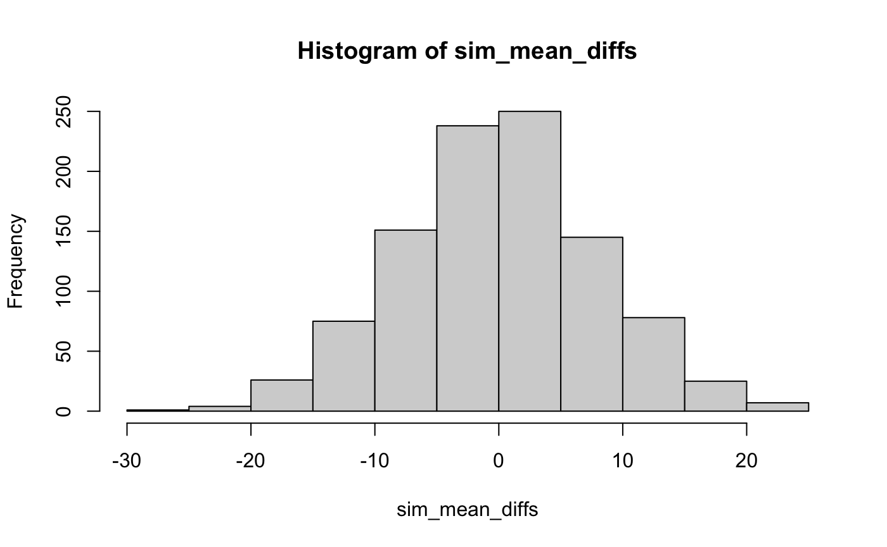
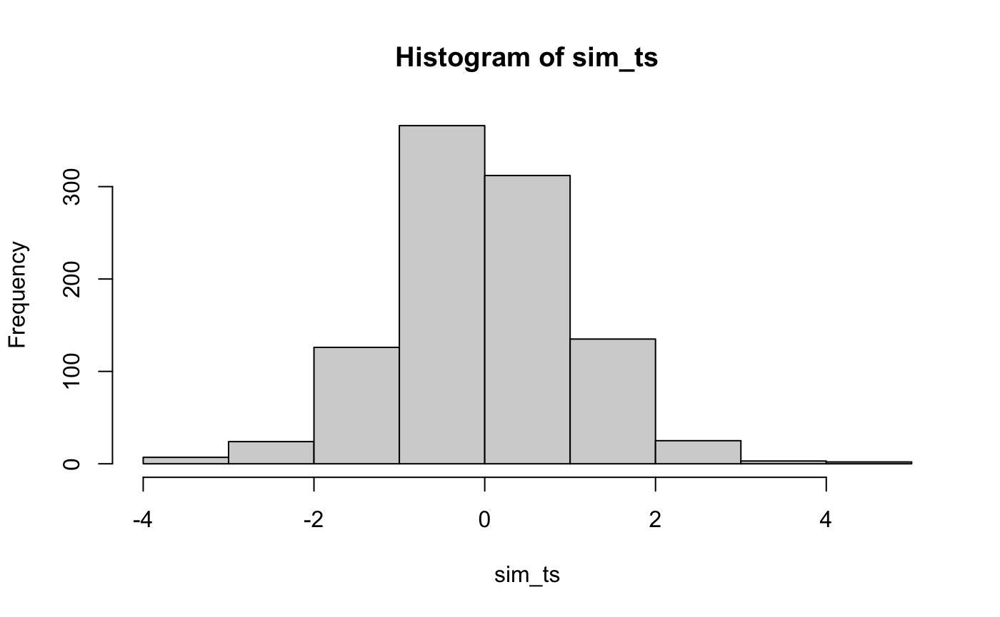
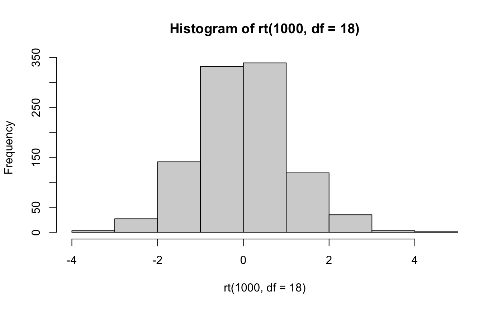
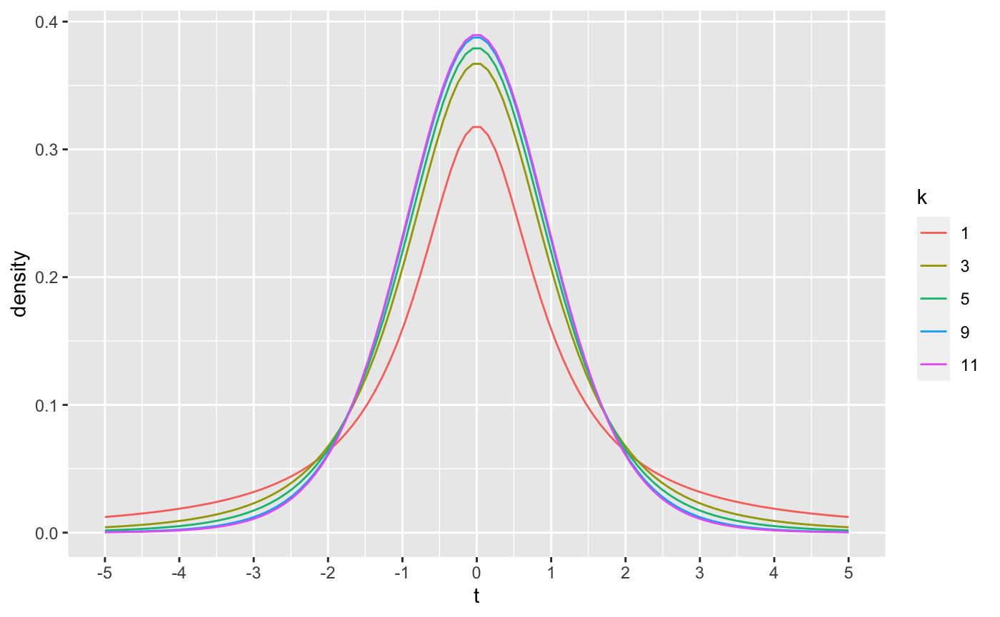
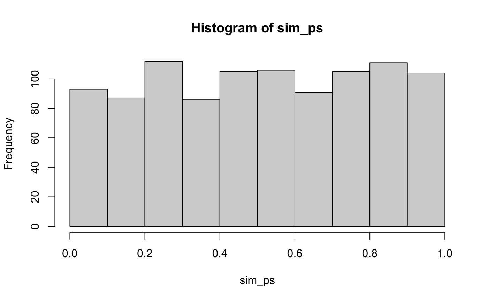
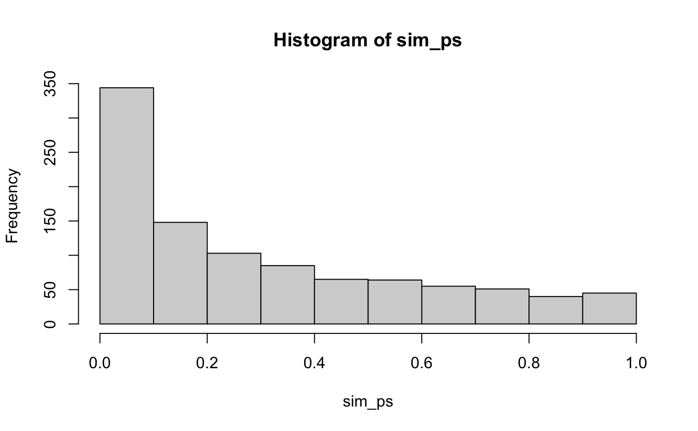
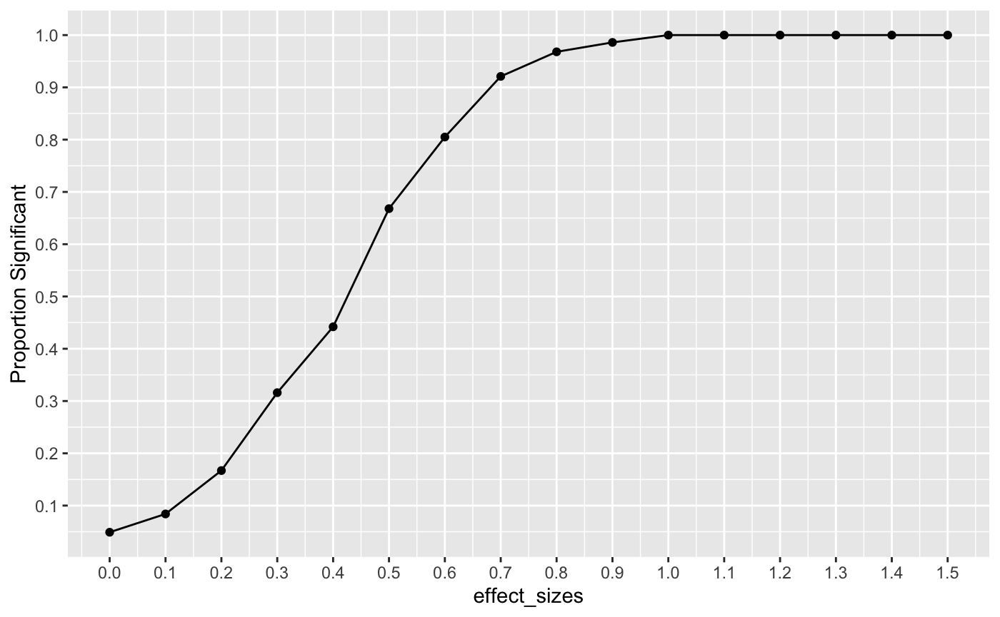

Lab10_ttest.RmdThis lab demonstrates how to conduct one sample, paired sample, and independent sample t-tests in R, and uses R as a tool to develop insight into the conceptual foundations of the t-test
William Sealy Gosset published the t-test under the pseudonym “Student”, which is why the test is sometimes called “Student’s t-test” (Student 1908). There is dispute about the origin and meaning of \(t\). One hypothesis is that \(s\) was commonly used at the time to refer to sample statistics, so Gosset chose \(t\) as the next letter, perhaps indicating a “step-up” in thinking about sample statistics? Gosset published under a pseudonym because he was an employee of Guinness Breweries at the time, and he was hired to examine issues in making inferences about small samples in brewing beer. The test he developed could have been the intellectual property of Guinness, but Gosset thought the test could be broadly used, so he published it under a pseudonym to protect his job.
Base R includes the t.test() function that computes several forms of t-tests.
?t.testHere are three quick examples of computing one sample, paired sample and independent sample t-tests using R.
some_random_means <- rnorm(10,0,1) t.test(some_random_means, mu=0) #> #> One Sample t-test #> #> data: some_random_means #> t = -0.81166, df = 9, p-value = 0.4379 #> alternative hypothesis: true mean is not equal to 0 #> 95 percent confidence interval: #> -1.1082764 0.5229835 #> sample estimates: #> mean of x #> -0.2926465
A_means <- rnorm(10,0,1) B_means <- rnorm(10,0,1) t.test(A_means,B_means,paired=TRUE) #> #> Paired t-test #> #> data: A_means and B_means #> t = -2.0033, df = 9, p-value = 0.07614 #> alternative hypothesis: true difference in means is not equal to 0 #> 95 percent confidence interval: #> -1.64060853 0.09954554 #> sample estimates: #> mean of the differences #> -0.7705315
A_means <- rnorm(10,0,1) B_means <- rnorm(10,0,1) t.test(A_means,B_means,var.equal = TRUE) #> #> Two Sample t-test #> #> data: A_means and B_means #> t = 0.35487, df = 18, p-value = 0.7268 #> alternative hypothesis: true difference in means is not equal to 0 #> 95 percent confidence interval: #> -0.8213168 1.1551713 #> sample estimates: #> mean of x mean of y #> 0.5473487 0.3804215
In the above examples, the t.test() function was applied to vectors containing sample means. It is also possible to apply the t.test() function to long data frames using the ~ syntax.
my_data <- data.frame(group = rep(c("A","B"), each=10), means = rnorm(20,0,1)) t.test(means~group, var.equal=TRUE, data=my_data) #> #> Two Sample t-test #> #> data: means by group #> t = 0.29977, df = 18, p-value = 0.7678 #> alternative hypothesis: true difference in means is not equal to 0 #> 95 percent confidence interval: #> -0.8206089 1.0937641 #> sample estimates: #> mean in group A mean in group B #> -0.4255469 -0.5621244
By default, the t.test() function provides a two sided test, but the options can be specified using the alternative = c("two.sided", "less", "greater") input parameter.
some_random_means <- rnorm(10,0,1) t.test(some_random_means, mu=0, alternative = "two.sided") #> #> One Sample t-test #> #> data: some_random_means #> t = -0.14144, df = 9, p-value = 0.8906 #> alternative hypothesis: true mean is not equal to 0 #> 95 percent confidence interval: #> -0.8266825 0.7293877 #> sample estimates: #> mean of x #> -0.04864741 t.test(some_random_means, mu=0, alternative = "less") #> #> One Sample t-test #> #> data: some_random_means #> t = -0.14144, df = 9, p-value = 0.4453 #> alternative hypothesis: true mean is less than 0 #> 95 percent confidence interval: #> -Inf 0.5818243 #> sample estimates: #> mean of x #> -0.04864741 t.test(some_random_means, mu=0, alternative = "greater") #> #> One Sample t-test #> #> data: some_random_means #> t = -0.14144, df = 9, p-value = 0.5547 #> alternative hypothesis: true mean is greater than 0 #> 95 percent confidence interval: #> -0.6791191 Inf #> sample estimates: #> mean of x #> -0.04864741
The t.test() function also makes default assumptions about the indpendent samples test. By, default it applies a correction called Welch’s correction. This correction is related to the assumption of equal variances between the samples in each group.
A <- rnorm(10,0,1) B <- rnorm(10,0,1) t.test(A,B) #> #> Welch Two Sample t-test #> #> data: A and B #> t = -0.96958, df = 17.858, p-value = 0.3452 #> alternative hypothesis: true difference in means is not equal to 0 #> 95 percent confidence interval: #> -1.5231908 0.5616001 #> sample estimates: #> mean of x mean of y #> -0.38229201 0.09850335
To conduct a t-test without the correction set var.equal=TRUE. This only applies to the independent sample case where there are two variances.
t.test(A,B, var.equal=TRUE) #> #> Two Sample t-test #> #> data: A and B #> t = -0.96958, df = 18, p-value = 0.3451 #> alternative hypothesis: true difference in means is not equal to 0 #> 95 percent confidence interval: #> -1.522596 0.561005 #> sample estimates: #> mean of x mean of y #> -0.38229201 0.09850335
The t.test() function has two kinds of outputs. First, it prints the results to the console (as we saw above). Second, it outputs a list containing the components of test. The individual pieces of the t-test can be saved and accessed by putting the results of the t.test into a new variable.
my_results <- t.test(A,B, var.equal=TRUE)
For example:
my_results$statistic #> t #> -0.9695846 my_results$parameter #> df #> 18 my_results$p.value #> [1] 0.3451026 my_results$estimate #> mean of x mean of y #> -0.38229201 0.09850335
The papaja package has convenient functions for automating the writing of t-test results.
library(papaja) apa_print(my_results) #> $estimate #> [1] "$\\Delta M = -0.48$, 95\\% CI $[-1.52$, $0.56]$" #> #> $statistic #> [1] "$t(18) = -0.97$, $p = .345$" #> #> $full_result #> [1] "$\\Delta M = -0.48$, 95\\% CI $[-1.52$, $0.56]$, $t(18) = -0.97$, $p = .345$" #> #> $table #> NULL #> #> attr(,"class") #> [1] "apa_results" "list"
For example, this t-test result, \(t(18) = -0.97\), \(p = .345\), was printed using an r code snippet inserted into the text of this .Rmd.
In this section we will create simulations of the various components of a an independent samples t-test. One goal will be to make the code general, so that we can simulate a wide range of designs.
We will simulate an experimental situation involving two groups A and B. We will assume they have an equal number of subjects (N), and that each subject was measured a similar number of times (X times). We will also simulate the null-hypothesis, which assumes that the experimental manipulation was ineffective. As a result, we assume that the subjects in A and B are randomly sampled from the same underlying distribution. We will assume the raw scores for each subject come from a normal distribution.
#subjects per group N <- 10 # measurements per subject X <- 2 # distribution assumptions A_mean <- 100 B_mean <- 100 A_sd <- 25 B_sd <- 25
With the above assumptions in place, it is possible to simulate the results of a single experiment.
A_scores <- rnorm(N*X,A_mean,A_sd) B_scores <- rnorm(N*X,B_mean,B_sd) sim_data <- data.frame(groups = rep(c("A","B"),each = N*X), subjects = rep(rep(1:N,each = X),2), scores = c(A_scores,B_scores)) library(dplyr) subject_means <- sim_data %>% group_by(groups,subjects) %>% summarize(means = mean(scores), .groups = 'drop') t.test(means~groups, var.equal =TRUE,data = subject_means) #> #> Two Sample t-test #> #> data: means by groups #> t = -0.64928, df = 18, p-value = 0.5244 #> alternative hypothesis: true difference in means is not equal to 0 #> 95 percent confidence interval: #> -16.716343 8.823426 #> sample estimates: #> mean in group A mean in group B #> 102.6582 106.6047
As one alternative, here is another example of the above in a one-liner:
t.test(replicate(N, mean(rnorm(X, A_mean, A_sd))), replicate(N, mean(rnorm(X, B_mean, B_sd))), var.equal = TRUE) #> #> Two Sample t-test #> #> data: replicate(N, mean(rnorm(X, A_mean, A_sd))) and replicate(N, mean(rnorm(X, B_mean, B_sd))) #> t = -0.1358, df = 18, p-value = 0.8935 #> alternative hypothesis: true difference in means is not equal to 0 #> 95 percent confidence interval: #> -17.32078 15.21761 #> sample estimates: #> mean of x mean of y #> 93.50398 94.55556
“Any experiment may be regarded as forming an individual of a ‘population’ of experiments which might be performed under the same conditions. A series of experiments is a sample drawn from this population.” — William Sealy Gossett (Student 1908).
This quote is the first sentence from Student’s formative paper on the t-test. In the previous section we have simulated a single experiment. If we conduct this simulation several thousand times, we can create the “population” of experiments that could have occurred under the same conditions. The very general idea is to create a sampling distribution of experiments, and then compare the results of an actual experiment to distributions of possible experiments.
If this experiment was repeated a 1000 times, then each time there could be a mean difference between Group A and B. Thus, if the mean difference was the sample statistic used to summarize the result of this experiment, the sampling distribution of mean differences could be estimated by simulation:
sim_mean_diffs <- replicate(1000, mean(replicate(N, mean(rnorm(X, A_mean, A_sd)))) - mean(replicate(N, mean(rnorm(X, B_mean, B_sd))))) hist(sim_mean_diffs)

Student used the \(t\) formula, rather than mean differences to summarize the sample data from a two group experiment. The \(t\) formula normalizes the mean difference by the estimated standard error of the mean.
\(t = \frac{\bar{X}_1 - \bar{X}_2}{s_p\sqrt{2/n}}\)
\(s_p = \sqrt{\frac{s^2_{X_1} + s^2_{X_2}}{2}}\)
Although we already have distribution functions for t-values, a t-distribution could be constructed by simulation. Here is a histogram of the 1000 \(t\) values that could have happened.
sim_ts <- replicate(1000, t.test(replicate(N, mean(rnorm(X, A_mean, A_sd))), replicate(N, mean(rnorm(X, B_mean, B_sd))), var.equal = TRUE)$statistic) hist(sim_ts)

R comes with the dt, pt, qt, rt family of function for t-distributions as well.
For example, rather than simulating t values as we did above, we could sample 1000 \(t\) values from a t-distribution with df = 18.
 THe dt function could be used to draw the probability density function for t-distributions across a range of degrees of freedom.
library(ggplot2) plot_df <- data.frame(values = c(dt(x=seq(-5,5,length.out = 100), df=1), dt(x=seq(-5,5,length.out = 100), df=3), dt(x=seq(-5,5,length.out = 100), df=5), dt(x=seq(-5,5,length.out = 100), df=9), dt(x=seq(-5,5,length.out = 100), df=11) ), x = rep(seq(-5,5,length.out = 100),5), k = as.factor(rep(c(1,3,5,9,11), each = 100)) ) ggplot(plot_df, aes(x = x, y=values, color=k, group=k))+ geom_line()+ ylab("density")+ xlab("t")+ scale_x_continuous(breaks=-5:5)

As discussed in lecture, the t-distribution approaches a normal distribution as degrees of freedom increase. For example, 95% of the values in normal distribution are smaller than Z = 1.644854 standard deviations. The corresponding 95% values of t are shown to approach 1.644 as degrees of freedom increase.
The above simulations assumed that an experimental manipulation had no effect, therefore the expectation is that measurements from both groups were taken from the same distribution, and that any differences between groups would be explained by random sampling.
Another possibility is that the experimental manipulation was effective and caused a difference between the groups. In this case the expectations are that the measurements from each group are from different distributions. Specifically, some causal force from the manipulation is assumed to change performance, resulting in systematic changes to the scores in the group that received the manipulation. The experimental manipulation could in principle change almost any property of the distribution, and differences in means are often a focus of research interest.
The purpose of this conceptual section is to use simulation techniques to ask what proportion of experiments would be significant (at some alpha level, say p<.05) if the experimental manipulation worked and caused a difference between group means.
First, we should be confident in a basic answer. If we set an alpha criterion of p<.05, what proportion of experiments will be significant according to the null-hypothesis (that there is no difference between groups)? We can conduct this simulation, and see how many experiments out of 1000 returned a p-value of less than .05. The answer should be, by definition, approximately .05.
sim_ps <- replicate(1000, t.test(replicate(10, mean(rnorm(5, 0, 1))), replicate(10, mean(rnorm(5, 0, 1))), var.equal = TRUE)$p.value) hist(sim_ps)

length(sim_ps[sim_ps < .05])/1000 #> [1] 0.057
A next question would be something like, what proportion of experiments would be significant if there actually was a difference between the means of group A and B. For example, here we assume that group A has a mean of 0, and group B has a mean of .25, and that both distributions have the same standard deviation (sd=1). In this design, with N = 10 in each group, and 5 scores measured per subject, the probability of getting a p < .05 is much higher than 5%.
sim_ps <- replicate(1000, t.test(replicate(10, mean(rnorm(5, 0, 1))), replicate(10, mean(rnorm(5, .25, 1))), var.equal = TRUE)$p.value) hist(sim_ps)

length(sim_ps[sim_ps < .05])/1000 #> [1] 0.224
We are working toward plotting power-curves, which could show us the probability of getting a significant result as a function of design parameters like number of subjects, and number of scores per subject (observations per cell), as well as the assumed “effect-size” of the manipulation. Effect size has a regular meaning, which is the idea that an experimental manipulation can cause change in different amounts, some manipulations might have big effects (e.g., cause a really big change in the mean), or small effects.
Effect-size can also refer to specific statistical units. For example, Cohen proposed that effect-sizes for mean differences between two groups could be standardized. For example, if there was a mean difference of between group A and B, it is not clear if this is a big or small difference. If the underlying distributions were unit normal distributions, a mean shift of 1 is very large, it represents shifting the distribution by a whole standard deviation. If the underlying distributions had a large standard deviation, say 100, then shifting the mean by a 1 isn’t very large with respect to the total variability.
So, Cohen’s effect size can be expressed as the idea to normalize a mean difference by a standard deviation.
\(\text{Cohen's d} = \frac{\text{mean difference}}{\text{standard deviation}}\)
We will make use of these ideas in out power-curve simulations. Specifically, for convenience, we will use unit normal distributions as the parent distributions for our group scores. And, we will only simulate differences in the mean between groups. As a result, when we increase the mean difference by .25, .5, or 1, or another number, we can interpret these differences in terms of standard deviation units.
In this example we conduct a range of simulations assuming that effect-size increases from 0 to 1.5, in steps of .1. All simulations have the same design parameters: there are N=10 subjects per group, and X=5 scores are taken for each subject. The power curve shows the proportion of experiments that would return a result of p < .05 at each level of effect-size. For example, when the assumed effect-size is 1, then this design will detect an effect of that size at the p<.05 level close to 100% of the time. However, the “power” of the same design to detect smaller effects decreases following this curve.
effect_sizes <- seq(0,1.5,.1) prop_significant <-c() for(i in 1:length(effect_sizes)){ sim_ps <- replicate(1000, t.test(replicate(10, mean(rnorm(5, 0, 1))), replicate(10, mean(rnorm(5, effect_sizes[i], 1))), var.equal = TRUE)$p.value) prop_significant[i] <- length(sim_ps[sim_ps < .05])/1000 } plot_df <- data.frame(effect_sizes, prop_significant) ggplot(plot_df, aes(x=effect_sizes,y=prop_significant))+ geom_line() + geom_point() + scale_x_continuous(breaks=seq(0,1.5,.1))+ scale_y_continuous(breaks=seq(0,1,.1)) + ylab("Proportion Significant")

In general, labs will present a discussion of problems and issues with example code like above, and then students will be tasked with completing generalization assignments, showing that they can work with the concepts and tools independently.
Your assignment instructions are the following:
Rosenbaum, D., Mama, Y., & Algom, D. (2017). Stand by Your Stroop: Standing Up Enhances Selective Attention and Cognitive Control. Psychological science, 28(12), 1864-1867.
Note, the paper, the data, and an existing reproducible analysis of this data is available at https://crumplab.github.io/statisticsLab/lab-10-factorial-anova.html#important-stuff-4
The re-analysis should focus only on Experiment 3. There are three main goals